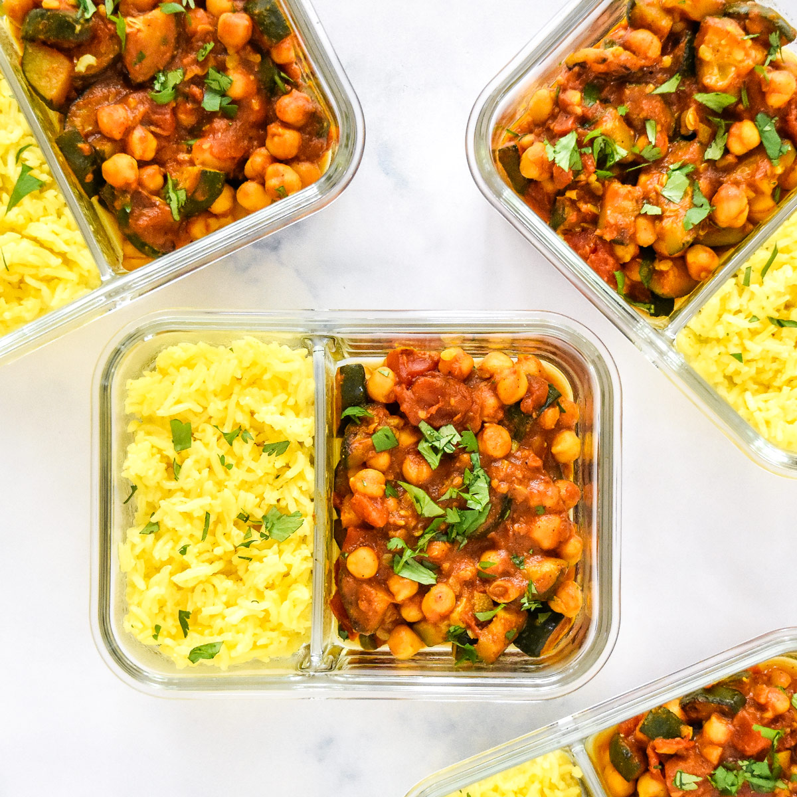

Green Bean and Plum Salad
This recipe was inspired by a springtime juxtaposition of some jewel-like cherry plums and fresh green beans at my farmers market. The two complemented each other in a lightly pickled bean salad. Cherry plums are small red fruit with a sweet, floral flavor; mirabelles or other small plums would also work well.
Calories: 500
Protein: 20gr
Carbs: 50gr
Fat: 20gr